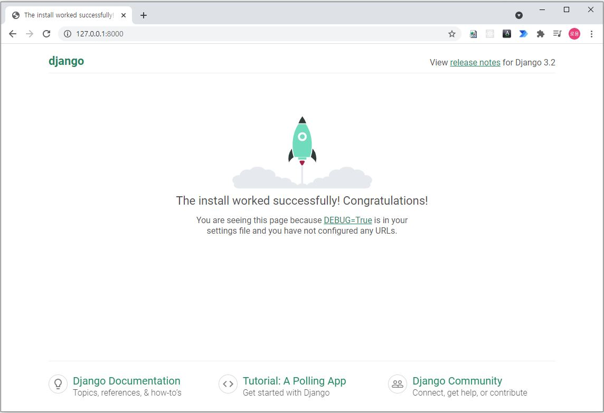

Django 웹 프레임워크
This article contains personal thoughts. Please leave a comment on the parts that need to be revised.
이 글은 개인적인 견해가 포함되어 있습니다. 수정이 필요한 부분은 의견을 남겨주시기 바랍니다.
Django란?
Django는 파이썬으로 만들어진 무료 오픈소스 웹 애플리케이션 프레임워크 입니다. 유지보수가 편리한 웹사이트를 신속하게 개발 하도록 돕는 구성요소로 이루어진 웹 프레임워크 입니다.
웹 사이트 개발 시 인증 관리, 관리자 페이지 등 고려 해야할 부분들이 기능들을 제공하기 때문에 똑같은 작업을 하는 시간을 줄여줄 수 있습니다. 물론 다른 컴포넌트들을 사용하기 위해 확장될 수도 있습니다.
Django 코드는 유지보수가 쉽고 재사용하기 좋게 하는 패턴을 이용하여 작성됩니다.
이 구조를 장고는 “모델 뷰 템플릿(Model View Template)(MVT)” 아키텍처라고 부릅니다.
Model View Controller 아키텍처와 유사합니다.
- URLs
URL mapper는 요청 URL을 기준으로 HTTP 요청을 적절한 뷰(view)로 보내주기 위해 사용됩니다. 또한 URL mapper는 URL에 나타나는 특정한 문자열이나 숫자의 패턴을 일치시켜 데이터로서 뷰 함수에 전달할 수 있습니다. - Models
응용 프로그램의 데이터 구조를 정의하고 데이터베이스의 기록을 관리하는 방법을 제공하는 파이썬 객체입니다. - View
HTTP 요청을 수신하고 HTTP 응답을 반환하는 요청 처리 함수입니다. - Templates
파일의 구조나 레이아웃을 정의하고 실제 내용을 보여주는데 사용되는 텍스트 파일입니다. 템플릿이 꼭 HTML 타입일 필요는 없습니다.
Django 설치 하기
python이 설치되어 있다는 가정하에 Windows 10 OS를 기준으로 진행 해보겠습니다.
Django를 설치 하기 전에 개발 환경을 깔끔하게 관리하기 위해 가상 환경(Virtual environment)을 먼저 설치하고 그 안에 Django를 설치 하겠습니다.
원하는 위치로 이동한 후에 djangoSample 이라는 폴더를 생성 합니다.
> mkdir djangoSample
> cd djangoSample
samplevenv 이름으로 가상환경을 생성 합니다.
> python -m venv samplevenv
생성이 완료되면 폴더가 생성되고 해당 폴더에 사용할 가상환경이 생성 됩니다.
생성 된 가상환경을 사용하기 위해서는 명령어를 입력해 가상환경을 실행해야 합니다.
콘솔의 프롬프트 앞에 접두어가 붙어있다면 가상환경이 시작된 것을 알 수 있습니다.
> sampleenv\Scripts\activate.bat
(sampleenv) >
가상환경의 pip가 최신 버전인지 확인한 후 django를 설치합니다.
(sampleenv) > python -m pip install --upgrade pip
Collecting pip
Downloading pip-21.2.2-py3-none-any.whl (1.6 MB)
|████████████████████████████████| 1.6 MB 45 kB/s
Installing collected packages: pip
Attempting uninstall: pip
Found existing installation: pip 20.1.1
Uninstalling pip-20.1.1:
Successfully uninstalled pip-20.1.1
Successfully installed pip-21.2.2
(sampleenv) > pip install django
Collecting django
Downloading Django-3.2.6-py3-none-any.whl (7.9 MB)
|████████████████████████████████| 7.9 MB 26 kB/s
Collecting sqlparse>=0.2.2
Using cached sqlparse-0.4.1-py3-none-any.whl (42 kB)
Collecting asgiref<4,>=3.3.2
Downloading asgiref-3.4.1-py3-none-any.whl (25 kB)
Collecting pytz
Using cached pytz-2021.1-py2.py3-none-any.whl (510 kB)
Collecting typing-extensions
Using cached typing_extensions-3.10.0.0-py3-none-any.whl (26 kB)
Installing collected packages: typing-extensions, sqlparse, pytz, asgiref, django
Successfully installed asgiref-3.4.1 django-3.2.6 pytz-2021.1 sqlparse-0.4.1 typing-extensions-3.10.0.0
pip 명령어를 통해 django가 설치된 것을 확인할 수 있습니다.
(sampleenv) > pip list
Package Version
----------------- --------
asgiref 3.4.1
Django 3.2.6
pip 21.2.2
pytz 2021.1
setuptools 47.1.0
sqlparse 0.4.1
typing-extensions 3.10.0.0
Django 프로젝트 시작하기
개발이 가능한 환경을 구성했으니 간단한 웹사이트를 만들어보겠습니다.
django-admin 도구를 이용해 사이트의 기본 토대를 생성할 수 있습니다.
이 디렉토리와 파일들은 위에서 설명한 MVT 아키텍쳐로 구성이 되는데 파일명을 마음대로 변경해서도 안되고, 이동 해서도 안됩니다.
Django의 특정한 구조를 유지해야 합니다.
samplesite라는 이름으로 현재 디렉토리에 설치합니다. 원한다면 다른 디렉토리로 이동해서 설치할 수도 있습니다.
(sampleenv) > django-admin startproject samplesite .
*중요!
모든 작업은 가상환경(virtualenv) 안에서 해야 합니다. 현재 콘솔 창에서 접두어가 안 보인다면 먼저 활성화해야 합니다.
스크립트 실행 후 문제가 없다면 아래와 같이 같은 디렉토리 구조가 생성됩니다.
djangosample
├───manage.py
└───samplesite
asgi.py
settings.py
urls.py
wsgi.py
__init__.py
이 폴더내에서 manage.py 스크립트를 이용해 다른 설치 없이 개발용 웹 서버를 시작할 수 있습니다.
(sampleenv) > python manage.py runserver
Watching for file changes with StatReloader
Performing system checks...
System check identified no issues (0 silenced).
You have 18 unapplied migration(s). Your project may not work properly until you apply the migrations for app(s): admin, auth, contenttypes, sessions.
Run 'python manage.py migrate' to apply them.
August 02, 2021 - 15:45:35
Django version 3.2.6, using settings 'samplesite.settings'
Starting development server at http://127.0.0.1:8000/
Quit the server with CTRL-BREAK.
서버가 실행되면 웹 브라우저로 만들어진 사이트를 볼 수 있습니다.
http://127.0.0.1:8000/ 으로 접속해서 아래와 같은 모습이 보인다면 성공입니다.
